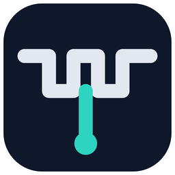

USB 串口中间层 · LOGO DESIGN EXPLORATION
tap 的字面意象：一根串口总线横贯，中段垂直引出抽头到监听端口。三端点圆点即三个连接器。结构最简，极小尺寸下最清晰。
UART 方波本身就是"串口"的通用符号；低电平段中点垂直向下的抽头正是 serialtap 做的事——总线照常流动，一旁分接观测。故事最完整，尺寸收缩性够用。
wiretap 的监听意象：总线截面是一枚环，探针从 45° 搭上去取信号，环心亮点是被截获的数据。气质偏"测量仪器"。
三层堆叠 = 业务程序 / serialtap / 板子，高亮的中间层向右引出一个开放端口——"中间层 + 可接入"的架构语义直译。偏平台感。
开发者工具的窗口意象：取景窗内的提示符与光标块。识别度高但同质化也高（终端类产品常用），与"串口/分接"无关联。
字母 S 的笔画全部由方波台阶构成（serial 的波形笔画），末端一个分接端口圆点。作为 monogram 独特性最强，适合做字标联动。
